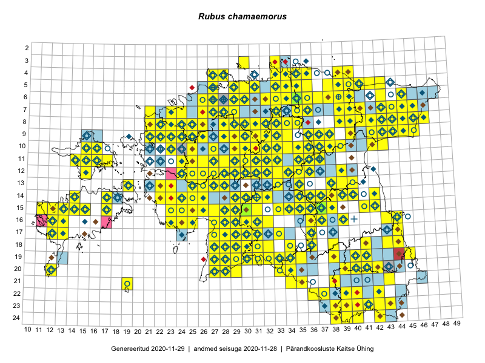

Rubus chamaemorus
Uuendatud: 2016-12-01
Kaardile koondatud taksonid: Rubus chamaemorus L.

Kaart põhineb 330 kirjel.
Kuvatud viited 20 esimesele andmebaasikirjele, ülejäänud PlutoFis
- Tiit Hallikma, Indrek Tammekänd, Toomas Kukk: 2015-06-09: 12-29: ala
- Ott Luuk, Toivo Sepp: 2015-07-29: 09-31: ala
- Peedu Saar, Ott Luuk: 2015-06-21: 14-42: ala
- Ott Luuk, Peedu Saar: 2015-07-27: 11-35: ala
- Peedu Saar, Ott Luuk: 2015-07-27: 10-35: ala
- Peedu Saar, Liina Oja: 2015-06-08: 10-33: ala
- Peedu Saar, Liina Oja: 2015-06-09: 17-28: ala
- Peedu Saar, Liina Oja: 2015-06-10: 14-30: ala
- Ott Luuk, Peedu Saar: 2015-08-12: 23-43: ala
- Peedu Saar, Liina Oja: 2015-06-10: 14-31: ala
- Peedu Saar, Liina Oja: 2015-06-11: 15-29: ala
- Peedu Saar, Liina Oja: 2015-06-11: 16-29: ala
- Peedu Saar, Liina Oja: 2015-06-12: 13-35: ala
- Peedu Saar, Liina Oja: 2015-07-20: 08-44: ala
- Peedu Saar, Liina Oja: 2015-07-22: 08-45: ala
- Ott Luuk, Toivo Sepp: 2015-07-12: 10-31: ala
- Toomas Kukk, Eerik Leibak: 2015-07-29: 16-44: ala
- Toomas Kukk, Tiit Hallikma: 2015-06-10: 15-31: ala
- Toomas Kukk, Tiit Hallikma: 2015-06-11: 11-29: ala
- Toomas Kukk, Tiit Hallikma: 2015-06-12: 12-34: ala